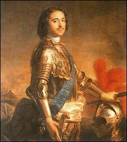

| Emperor Peter I, who ruled Russia from 1682 to 1725, was only 10 when
he ascended the throne of Russia as co-ruler with his half brother, Ivan V. Peter became sole ruler
in 1696, and after 1698 his power was undisputed. In 1697, Peter's thirst for
knowledge led him to tour Western Europe. The superior technology and advanced
culture he encountered made him determined to turn Russia, which still languished in the Middle Ages, into a modern,
influential nation. By the time of his death in 1725, Peter had reformed many of Russia's
outdated political and economic systems and had transformed Russia into a formidable
European power. |

RIA-Novosti from Sovfoto |